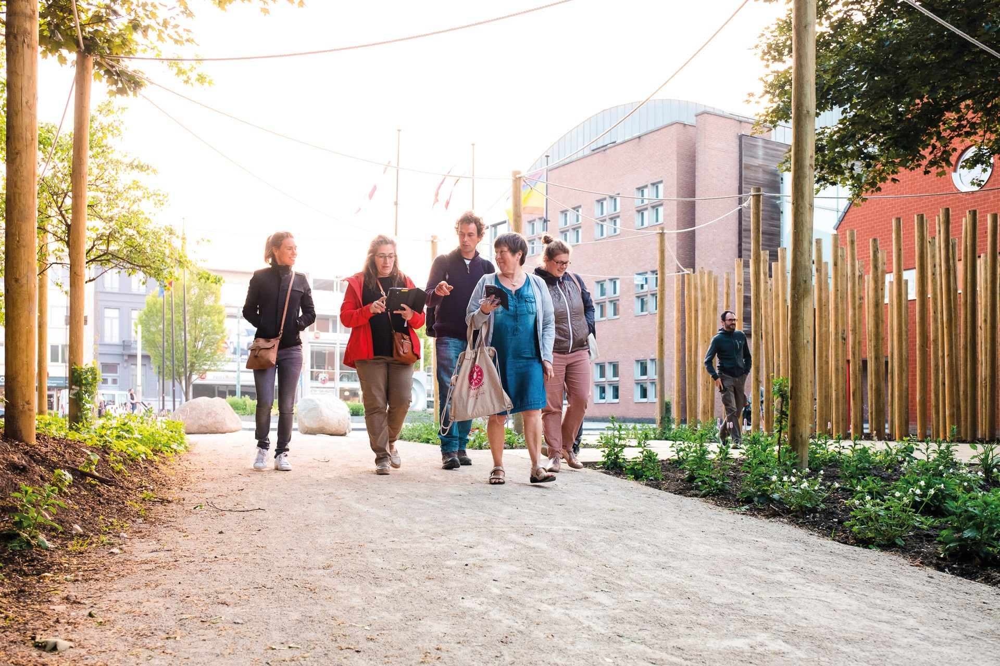
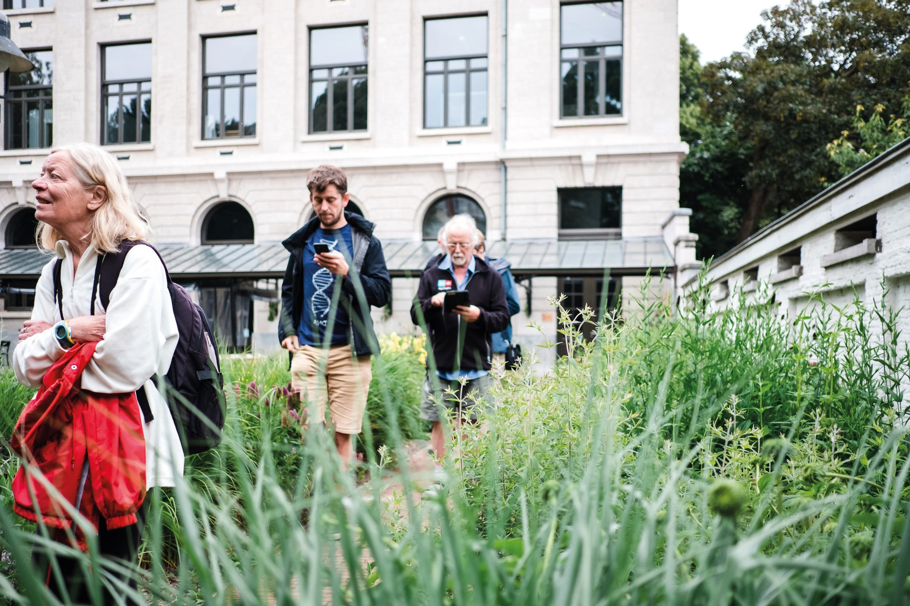

Om stap voor stap de toestand van de trage wegen op het grondgebied van Landen in kaart te brengen, kan de stad alle helpende handen gebruiken. Heb je zelf wat streekkennis of heb je zin om te ontdekken welke trage wegen er in jouw buurt te vinden zijn? Schrijf je dan in voor het startmoment. Daar krijg je een korte inleiding over het project en zal getoond worden hoe je met een app zelf aan de slag kan gaan om mee de trage wegen op de kaart te zetten. Het grondgebied is opgesplitst in kleinere hokjes die we onder de deelnemers verdelen.
Trage wegen vind je in de meeste gevallen vlakbij je woonplaats. Je hoeft er dus de auto niet voor te nemen. Bovendien kan je individueel of met je gezin aan de slag en is het geen probleem om onderweg de sociale afstand te bewaren.
Hokjeskaart van het grondgebied van Landen